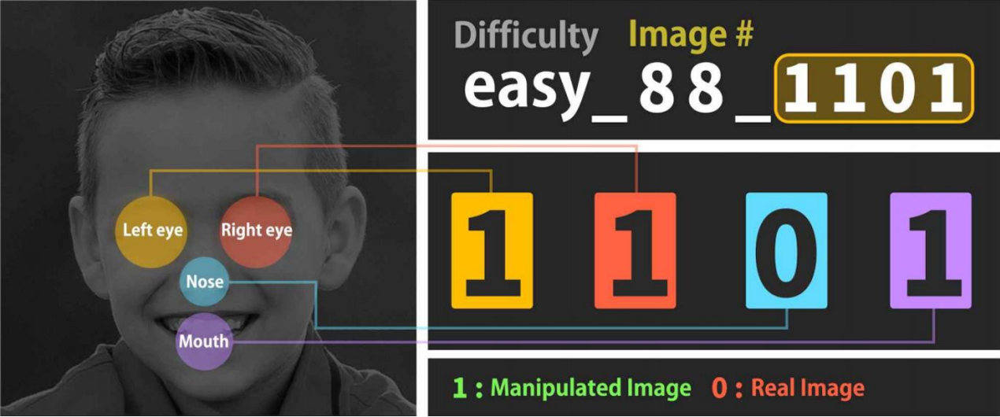
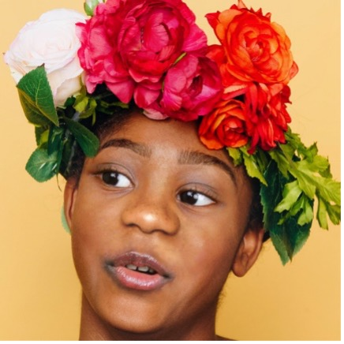
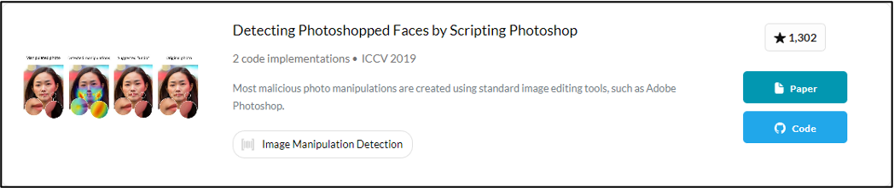
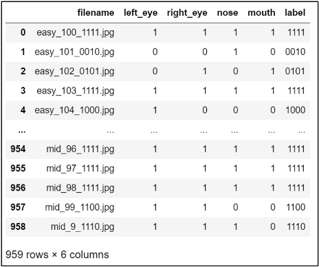
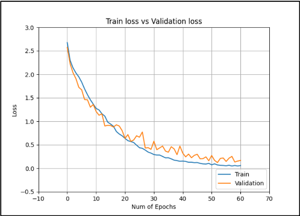
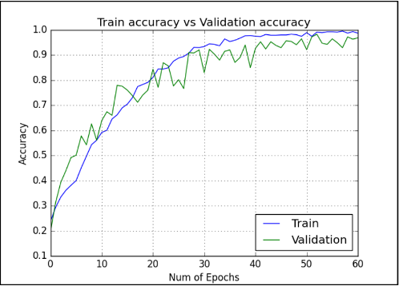

Each file is labeled with a 4-bit code marking which of 4 regions (left eye, right eye, nose, mouth) was manipulatedAn assignment from a graduate Pattern Recognition course at Korea University, offered as one of three topic choices. I picked manipulated-face detection: given a face photo, decide whether it's been digitally altered, and if so, which facial region was touched. No pretrained backbone was allowed, so both models were trained from scratch.
I built two separate CNNs rather than one multi-task model: a binary classifier that flags whether an image is real or manipulated, and a second model that predicts which of four regions (left eye, right eye, nose, mouth) were altered, output as a 15-way classification over every non-empty combination of the four regions. The dataset wasn't GAN-generated, it was Photoshop-manipulated, which shaped which prior work was actually relevant and which model design to use.

Mid difficulty — visually convincing, hard to flag by eye aloneThe dataset spans easy, mid, and hard difficulty tiers. Even at mid difficulty, the edits are clean enough that manual review isn't reliable, which is the actual case for automated detection.

"Detecting Photoshopped Faces by Scripting Photoshop" — Wang et al., ICCV 2019, found via Papers with CodeMost SOTA manipulation-detection work targets GAN-generated forgeries. This dataset wasn't GAN-based, so that line of research didn't apply. The Photoshop-scripting paper was a closer match: its dataset was also built from ordinary tools like Adobe Photoshop rather than a generative model, and its two-model split (a global real/fake classifier plus a local region classifier) is exactly the structure I used.
Manually reviewing the labeled set turned up one image whose filename claimed a manipulation that wasn't actually visible or verifiable. I excluded it rather than trust the label blindly.
The dataset wasn't large enough to train reliably without augmentation, confirmed by first running both models with none. The two models needed different settings, not the same recipe copy-pasted twice, because they answer different questions about the same faces.
| Setting | Real/fake classifier | Region localization | Why |
|---|---|---|---|
| horizontal_flip | True | False | Flipping would silently swap the ground-truth left-eye/right-eye labels the localization model depends on |
| vertical_flip | False | False | Upside-down faces aren't a realistic input in either case |
| shear_range | 0.2 | 0.2 | Standard tilt tolerance |
| zoom_range | 0.2 | 0.2 | Standard scale tolerance |
| rescale | 1/255 | 1/255 | Normalize pixel values into [0, 1] |
| validation_split | 0.2 | 0.2 | 80/20 train/validation split |
Real/fake classifier: 2,040 train images augmented into 1,633 validation-split images plus 407 held out for testing. Region localization model: 959 manipulated images split into 768 for training and 191 for validation, since it only ever sees images already flagged as manipulated.
Both models share the same convolutional backbone (input downsampled to 300×300 for training speed), then diverge into two different heads.
Binary cross-entropy loss · ~11M parameters
Categorical cross-entropy loss · 15 classes = every non-empty combination of 4 regions (2⁴ − 1). This model only ever sees images already flagged as manipulated, so "no region manipulated" isn't a valid output.

Parsed the 4-digit code out of each filename into a structured dataframe for the localization modelMy first attempt treated left_eye, right_eye, nose, and mouth as four separate binary targets. It trained poorly. Collapsing them into one combined categorical label (the label column above, one of 15 classes) instead of four independent outputs fixed it. Framing the four correlated sub-decisions as a single classification target gave the model a much cleaner signal to learn from.

Region localization model — train/validation loss
Region localization model — train/validation accuracyRelated work referenced: "Detecting Photoshopped Faces by Scripting Photoshop," Sheng-Yu Wang, Oliver Wang, Andrew Owens, Richard Zhang, Alexei A. Efros — ICCV 2019.